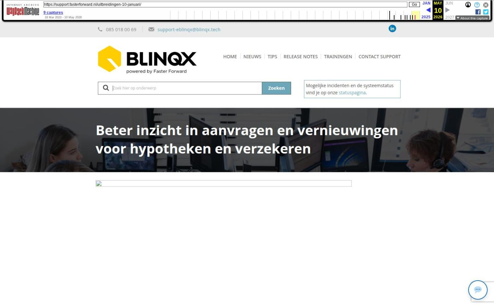

Beter inzicht in aanvragen en vernieuwingen voor hypotheken en verzekeren
In 2023 ontwikkelen we natuurlijk door! Het is daarom tijd voor de eerste release van het jaar. Op 10 januari wordt Elements vernieuwd met nieuwe features voor hypotheken en verzekeren.
Vanaf 10 januari heb je beter inzicht in de status van HDN aanvragen, gearchiveerde polissen en rollen van verzekerde personen. Daarnaast zijn er nog 7 andere verbeteringen en optimalisaties.
- Beter inzicht in status van aanvraag
- HDN verkeer in detail getoond voor interne beheerders
- Inzicht in doorlooptijden
- Gearchiveerde polissen worden herkenbaar weergegeven
- Altijd de juiste rol voor verzekerde persoon
- Nieuwe dekkingen volgens SIVI up-to-date
- Geen overbodige conflicten bij mutatievoorstellen
- Melding van lopende aanvraag bij verplaatsen dossier of product
- Binnenkort: kalender krijgt nieuwe lay-out
- Beter inzicht in status van aanvraag
Het koppelen van de statusberichten HDN aan het aanvraagbericht en dossier is verbeterd. Voorheen werden statusberichten aan de hand van het aanvraagvolgnummer aan het aanvraagbericht gematcht. Vanaf nu worden deze gematcht met een uniek ID die verbonden is aan de aanvraag en dus ook aan het klantdossier.
Voorheen kon het gebeuren dat in het VX of SX bericht het aanvraagvolgnummer niet werd meegestuurd, waardoor het bericht niet gekoppeld kon worden aan de aanvraag en het dossier. Door dit unieke ID wordt dit bericht wel gekoppeld aan het dossier, waardoor je beter inzicht hebt in de status van de aanvraag.
Bovendien kan hierdoor de workflow reageren op het bericht (indien correct ingericht) en ontvang je een taak van dit bericht.
Deze optimalisatie is onderdeel van het vernieuwde HDN platform die we vanaf maart 2021 gebruiken.
Deze aanpassing geldt voor alle type berichten: DA, DX, SX, AX, KX, LX, VX, IA.
HDN verkeer in detail getoond voor interne beheerders
Interne beheerders kunnen nu sneller problemen herkennen bij verzonden en ontvangen HDN berichten. Zij kunnen nu namelijk gedetailleerder zoeken en filteren binnen verzonden en ontvangen HDN berichten. Je kan hierbij o.a. zoeken op een uniek klantdossier ID (HDNuuid) en aanvraagvolgnummer.
Deze 'HDN logs' zie je terug in de HDN inbox en in het tabblad 'HDN' in een klantdossier.
Als je de interne Elements beheerder bent van je organisatie en je wilt dit inzien, stuur dan een e-mail naar support@fasterforward.nl.
Inzicht in doorlooptijden
Je hebt nu inzicht in de doorlooptijden per hypotheekaanvraag met de rapportage 'Management – Hypotheken – Doorlooptijden'.
Hier zie je onder andere het aantal dagen tussen de aanvraag en het finaal akkoord. Daarnaast zie je ook bijvoorbeeld of een aanvraag First-Time-Right was.
Door de rapportage naar Excel te exporteren kun je bijvoorbeeld ook berekenen wat de afgelopen 6 weken de gemiddelde doorlooptijd is bij een bepaalde maatschappij.
- Verzekeren
- Gearchiveerde polissen worden herkenbaar weergegeven
Bij het aanmaken van een schademelding zie je nu duidelijk welke polissen wel en niet gearchiveerd zijn. Hierdoor weet je zeker dat je de juiste polis selecteert.
Altijd de juiste rol voor verzekerde persoon
Als je een Aplaza bericht ontvangt met een persoon die nog niet bekend is in jouw Elements, geef je nu gelijk aan of het een 'Eerste persoon' of 'Partner' is. Zo heeft iedere persoon in een dossier altijd een rol.
Nieuwe dekkingen volgens SIVI up-to-date
Als via ADN en Aplaza berichten binnenkomen, worden de nieuwste, bijbehorende dekkingen en/of soorten documenten aangemaakt. Deze zijn namelijk uitgebreid volgens de SIVI richtlijnen van december. Hiermee zijn alle te selecteren verzekeringen up-to-date om correct te verwerken in een klantdossier.
- NIEUWE DEKKINGEN
- Verkeersschade ongevallen vervoer werknemer/derde
- Verkeersschade ongevallen bedrijfsvervoer
- AVB Signing aanbrengen
- Elektronica buiten risico-adres
- Multimedia buiten risico-adres
Geen overbodige conflicten bij mutatievoorstellen
Bij het aanmaken van een nieuwe polis krijg je in bepaalde situaties geen mutatieconflict meer. Er wordt wel een mutatievoorstel aangemaakt, maar je hoeft dus minder conflicten op te lossen.
Dit is een optimalisatie op deze verbetering van 22 november.
- Algemeen
- Melding van lopende aanvraag bij verplaatsen dossier of product
Alleen wanneer je in je Elements omgeving gebruik maakt van meerdere HDN certificaten geldt:
Je kan een klantdossier niet meer verplaatsen naar een ander kantoor als er nog een openstaande HDN aanvraag voor een hypotheek (AX), levensverzekering (LX) of krediet (KX) onder een product staat.
Daarnaast kan je een product ook niet verplaatsen naar een ander dossier als er nog een openstaande HDN aanvraag voor een hypotheek (AX), levensverzekering (LX) of krediet (KX) onder een product staat.
Je ziet een informatiemelding als dit het geval is.
Het exporteren van gegevens naar een dossier van hetzelfde kantoor blijft wel mogelijk.
Binnenkort: kalender krijgt nieuwe lay-out
We zijn druk aan het testen met een vernieuwde, frisse lay-out van de kalender. De kalender wordt lichter en rustiger, waardoor je beter overzicht hebt van alle geplande afspraken. Daarnaast wordt de techniek van de kalender verbeterd, zodat we in de toekomst ook andere optimalisaties kunnen ontwikkelen.
Daarnaast wordt ook de pop-up voor het inplannen van een afspraak vernieuwd. Deze nieuwe feature lanceren we binnenkort.
- Laatste 5 releasenotes
- Nog meer data en documenten vergelijken »
- Gemakkelijk data en documenten vergelijken »
- Verbeteringen boekhouding en facturatie »
- Verbeteringen gespreksopname en onder de motorkap »
- Verbeteringen onder de motorkap en gespreksopnames »
Afbeeldingen bij dit artikel


Schermafbeelding van de oorspronkelijke pagina

Bron: Wayback Machine-archief